Derived Data Scripts
| Although available for selection in all PowerCurve products, the Semi Structured Data Definition component is only supported in PowerCurve Strategy Management and PowerCurve Originations. |
A Derived Data Script is used to create new derived variable values by applying mathematical, logical or string manipulation operations to existing Logical Data Source characteristics. A script can be used to transform existing data, perform calculations, derive new permanent data characteristics, or modify the value of existing data characteristics.
|
A Derived Data Script may be written as: 'Residual Income' = 'Net Monthly Income' - 'Monthly Outgoings' For each record processed through the script, data values will be calculated for the characteristic 'Residual Income' from the input data supplied in characteristics 'Net Monthly income' and 'Monthly Outgoings' For example: 'Net Monthly Income' = 1200, 'Monthly Outgoings' = 1000 therefore 'Residual Income' = 1200-1000 = 200. |
| The characteristic for which values are being derived must already exist in the Logical Data Source. |
The user creates scripts by entering text into a script editor where mathematical, logical or string manipulation operations are applied to Logical Data Source characteristics, (Operators and functions).
The script editor displays characteristic names, operators, command verbs, etc., in different colours.
The script editor has basic text manipulation such as selecting blocks of text to cut, copy, paste and delete.
As the script must follow certain syntax rules there is an option to check the syntax of the script. For guidelines on some of the script syntax rules see Guidelines on script syntax.
The script syntax must be valid before any testing can be carried out.
|
Any number contained in a Float characteristic is a binary representation of its decimal counterpart. Therefore, depending on the numbers involved, the result of the calculation may only be an approximation. |
|
An ArrayIndexOutOfBoundsException trace is being thrown in runtime if ADDELEMENT/SETSIZE is not set for a dynamic array. Therefore, users must use ADDELEMENT/SETSIZE to initialise a dynamic array. |
Editing a script involves entering the script content using the correct language and according to the correct syntax and grammar. Scripts can be edited, compiled and tested in a script editor.
When the user first drags a function into a script the places intended for the variables are marked by short expressions such as '<expr>' or '<stmt>'. The meaning of these expressions are as follows:
| Expression | Meaning |
|---|---|
|
array |
The array characteristic that you want to perform the function on. |
|
array1 |
A reference to a fixed-size or dynamic array to use as the first source. |
|
array2 |
A reference to a fixed-size or dynamic array to use as the second source. |
|
base |
The base of the logarithm to be calculated. |
|
bound |
A reference to a characteristic, a literal, or an expression that equates to an Integer between 1 and the size of the array. This may be used to limit the number of elements in the array that are tested for the maximum value. For example, if the array has a size of 12 and <bound> is set to 10, then the Max function will only test the first 10 elements. |
| calculationProfile | A reference to a Date Calculation Profile that is used with the DATEPADD and DATEPDIFF functions. For more information refer to the Date Profile Chooser dialog topic. |
|
char |
In a function on a string characteristic, the name of the characteristic on which the function is to be performed. |
|
class.method |
The name of the external calls and method to call. |
|
code table |
A reference to a fixed-size or dynamic array containing the Decision Reason Codes to be looked up in the table given by <decision reason code>. |
|
const |
A whole number or a piece of script that returns a constant value. |
|
data view embedded array |
A reference to an embedded array of the Data View into which the separate instance will be inserted. |
|
date |
In a DAYOFWEEK function, the date for which the day of the week is to be found. |
|
date1 |
In a DAYS or MONTHS function, the date normally expected to be the earlier of the two, i.e. that will lead to a positive number being returned if it is the earliest. |
|
date2 |
In a DAYS or MONTHS function, the date normally expected to be later of the two, i.e. that leads to a positive number being returned if it is the latest. |
| datePeriod | Is a keyword that is used in the DATEPADD and the DATEPDIFF functions. The datePeriod takes values of DAYS, MONTHS or YEARS, either hard-coded or as a string characteristic. |
|
day |
Used in a TODATE and a ISVALID function. |
|
desc table |
A reference to a fixed-size or dynamic array that is used by the function to write the descriptions that correspond to the matching Decision Reason Codes. |
|
decision reason code |
A reference to the name of the Decision Reason Code component used for the look up. |
|
decision set |
A reference to the name of a Decision Set component that is used to sort the input tables in decision category priority order. A String array may also be specified for testing purposes |
|
decision category |
A reference to a String characteristic which is used by the function to store the name of the highest priority decision category, obtained from the first row of the <output table> |
|
decision text |
A reference to a String characteristic which is used by the function to store the description of the highest priority decision category, obtained from the first row of the <output> |
|
dest |
In a function operating on an array, the new array that is to be created by the function, containing the sorted or merged array(s) |
|
divisor |
The number by which you want to divide (or a piece of script that returns that number) |
|
dynamic array |
A reference to a dynamic array |
| endDate | Is a date type characteristic that specifies the final date used in the function |
|
expr |
Any piece of script that returns either true or false or a number |
|
givendate |
In the DATE function, the known date from which an unknown date is to be found (or a piece of script that returns that date) |
|
lds |
A reference to a characteristic or array, which defines the separate instance to be inserted into the embedded array |
| ldm array | A reference to a fixed-size or dynamic array of a Logical Data Model. |
|
length |
In a SUBSTRING function, the length of the substring to be taken |
|
max |
A reference to a characteristic, a literal, or an expression that equates to an Integer type, and which is used to define the maximum value which could be selected for the random number. |
|
modality |
The characteristic that will hold the number of modes |
|
modalValues |
The characteristic that will hold a list of the modes |
|
month |
Used in TODATE and ISVALID function |
|
multiple |
In a rounding function, the input is rounded to a number divisible by the multiple |
| numberPeriods | Is a hard-coded value (supports zero and negative or positive values) or a characteristic of integer type that is used in the DATEPADD function. |
|
order |
In a sort function, a letter code that denotes how the array is to be sorted |
|
output table |
A reference to a String array, which is used by the function to store the merge of <table1> and <table2> |
|
period |
In a DATE function, the number of days after the given date that the date to be found is (or a piece of script that returns that number) |
|
power |
A reference to a characteristic, a literal, or an expression that equates to a numeric type, and which is used to define the power |
|
reason code table |
A reference to a String array which is used by the function to store the reason codes, obtained from the <output table> |
|
script.filename |
The name of the external script file |
|
size |
A reference to a characteristic, a literal, or an expression that equates to an Integer, which is used to define the size of the dynamic array |
|
start |
In a SUBSTRING function, the position in the original string of the first character of the substring |
| startDate | Is a date type characteristic that specifies the first date used in the function |
|
stmt |
Any piece of script that performs a task, such as assigning a value to one or more characteristics |
|
table1 |
A reference to a String array, which contains the values of the first decision results table |
|
table2 |
A reference to a String array, which contains the values of the second decision results table |
|
tail |
In topping and tailing; the number of the highest entries to ignore |
|
top |
In topping and tailing; the number of lowest entries to ignore |
|
toptaildev or toptailstd |
In topping and tailing by standard deviations; the number of standard deviations from the mean outside of which values should be ignored |
|
value |
The individual value that is to be found in the given array (or a piece of script that returns that value) |
|
value1 |
In a STRING function, the character string that will form the first part of the new string (or a piece of script that returns that string) |
|
value2 |
In a STRING function, the character string that will form the second part of the new string (or a piece of script that returns that string) |
|
variable_name |
A reference to a characteristic or a string literal, which is the name of the required environment variable |
|
year |
Used in TODATE and ISVALID function |
A Derived Data Script can be created from the Explorer window.
| You will only be able to add a component type that has been allowed for the selected folder. If it is not allowed it will not be listed and therefore cannot be selected. |
To create a Derived Data Script
- From the Explorer window right click at the required folder level and select Add component.
- Select Derived Data Script.
- In the Create component dialog enter the name of the Derived Data Script.
- If you wish to have the new component display in the Main editor on creation, ensure that the Open new components in component editor tick box is selected.
- Click OK.
The Derived Data Script editor will open allowing you to edit script, compile and test the Derived Data Script.
The Derived Data Script name will be listed in the Explorer window under the selected folder level. The component is identified by the icon.
If you do not wish the editor to open, de-select the tick box. From the Explorer window select the Derived Data Script and select Open.
See the topic Operators and functions for details of the operators, functions and statements that can be used in the script editor.
With the Derived Data Script editor open you can add script freehand or using the required resources from the Resources window you can.
The script editor must be open for editing.
To add a characteristic using auto complete
- Press Ctrl+Space to display the list of all available Logical Data Sources and functions.
or
Press the quote (') key to display only the list of available Logical Data Sources.
- Use the down arrow or mouse to select a data source from the list, and press enter. The data source is added to the script.
- With the cursor positioned after the data source name, press the full stop key (.) to display the list of available characteristics:
- Use the down arrow or mouse to select a characteristic from the list, and press enter. The characteristic is added to the script.
- If the selected characteristic contains further child characteristics (such characteristics are identified by not having a closing quote (') after the name), you can again press the full stop key (.) to display the list of available characteristics.
- If the selected characteristic is an array characteristic (such characteristics are identified by brackets [ ] after the name), you can position the cursor inside the brackets and then use auto completion to add a characteristic for the index, if dynamic indexing is required (as opposed to using static, constant numbers).
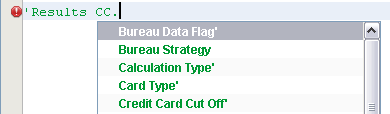
To add a characteristic to a script from the Resources window
- Click on the Expand (+) button to display the contents of the Logical Data Source in the Resources window.
- Drag the required Logical Data Source and drop it onto the script at the required position.
- The Select Characteristic dialog opens
- In the Search field
 type the word or part of a word that makes up the name of the characteristic.
type the word or part of a word that makes up the name of the characteristic.
The Select Characteristic dialog will focus in on a particular characteristic or set of characteristics that match this word. - Select the characteristic you require.
- Click OK. The Select Characteristic dialog closes and the characteristics you have selected will be added.

| If the Select Characteristic dialog is displaying the characteristics in a tree view, the Logical Data Source will need to be fully expanded to see all the characteristics that match the word(s). |
To add a characteristic to a script freehand
- Enter the name of the characteristic.
Characteristics must always be in single quotes (including the Logical Data Source name).
To add an array characteristic to a script using drag and drop
You can add an array characteristic to a script using auto complete, or you can use drag and drop as described here. Drag and drop is appropriate primarily for adding constant arrays (see Declaring characteristics variables within a script for more on this).
- Click on the Expand (+) button to display the contents of the Logical Data Source in the Resources window.
- Drag the required Logical Data Source and drop it onto the script at the required position.
- The Select Characteristic dialog opens.
- Locate the required array element and click on the OK button.
- when selecting a leaf characteristic array, the syntax will be:
'temp.data[1]' - when selecting a leaf characteristic array within a group array, the syntax will be:
'temp.array[1].data[1]'
| The above syntax examples can be manually changed to use other characteristics to define the desired array index. See following syntax example: 'temp.array'['temp.index1'].'data['temp.index2']' |
The Select Characteristic dialog will close and the array characteristic you have chosen will be added to the script.
Single text items or contiguous strings of text items can be copied and pasted in a script using standard keyboard copy and paste facilities.
To copy script item(s)
- The script must be open for editing.
- Highlight the required script item or string of items.
- Press Ctrl+C to copy the item(s).
- Click on the point in the script you wish to copy to.
- Press Ctrl+V to paste.
The item(s) will be copied.
Users can create scripts more quickly by using auto complete to locate specific functions, data sources and characteristics. Auto complete is context sensitive, in that it takes into account the character preceding the cursor in filtering what options are displayed to the user.
To launch auto complete
- Press Ctrl+Space to display the list of all available Logical Data Sources, characteristics, and/or functions.
or
Press the quote (') key to display only the list of available Logical Data Sources.
Which Logical Data Sources are displayed depends on the publishing rules associated with the folder in which you are creating the script. Logical data sources and characteristics are displayed in alphabetical order; functions are arranged in the same order in which they appear in the Palette.
- Use the down arrow or mouse to select a data source or function from the list, and press enter. The data source or function is added to the script.
- If a data source was selected:
With the cursor positioned after the data source name, press the full stop key (.) to display the list of available characteristics: - Use the down arrow or mouse to select a characteristic from the list, and press enter. The characteristic is added to the script.
- If the selected characteristic contains further child characteristics (such characteristics are identified by a full stop (.) after the name), you can again press the full stop key (.) to display the list of available characteristics.
To Filter list contents
- To filter the contents of a list, begin typing in the name of an item; the list of displayed items is narrowed as you type:
- Use the down arrow or mouse to select an item from the list, and press enter. The item is added to the script.
You can continue using auto complete to build the script; for more information see using auto complete in context.
The contents of the auto complete drop down list depends on the position of the cursor in the line of script, and what text precedes the cursor.
- If you press Ctrl+Space at the beginning of a line, the drop down list appears with the list of all available Logical Data Sources, characteristics, and functions.
- If you press the quote (') key, only the list of available Logical Data Sources is displayed.
- If you select a Logical Data Source from the list, it will be entered into the script. If you then press the full stop, only the list of characteristics associated with that Logical Data Source is displayed:
The nature of the characteristic is displayed: if it ends in a quote (‘), it is a leaf characteristic; if it ends in a [ ] it is an array characteristic; if it ends in a full stop (.) there are further leaf characteristics after it.
- Similarly, if you type the Logical Data Source name into the script freehand (with no full stop after it), then press the full stop (.) key, only the list of characteristics associated with that Logical Data Source is displayed.
- Ctrl+Space can be used at any point in the script to launch auto-complete, and will calculate and display a list of possible options depending on the cursor position. If no auto-complete options are applicable then no list will be displayed.
- When you have an array characteristic -- such as 'Application.Missing info'[ ] -- you can position the cursor within the brackets, and press the quote (') key, then select a Logical Data Source and characteristic within the array brackets.
- After completing a part of the script in the editor, you must add a space before Ctrl+Space or the quote (') key will again activate auto complete:
The script must be open for editing.
To add a Logical Data Source to a script
- Press the quote (') key to display only the list of available Logical Data Sources.
- Use the down arrow or mouse to select the Logical Data Source from the list and press enter. The Logical Data Source is added to the script.
A Logical Data Source needs to be added to a script if, for example, the Logical Data Source is being used by a User Defined Function that is being called by the script.
To add a Semi Structured Data Definition (SSDD) characteristic to a script by writing a Get and Set payload script
The script must be open for editing
Get SSDD Payload
-
The SSDD payload can be obtained by assigning its characteristic to another string or a SSDD characteristic.
// assign SSDD characteristic to another string or SSDD characteristic
'LDS.str' = 'LDS.ssdd'
'LDS.ssdd1' = 'LDS.ssdd2'
Set SSDD Payload
-
The SSDD payload can be set by assigning a string literal or string characteristic value to a SSDD characteristic
// assign a constant value expression to SSDD
'LDS.ssdd' = "{\"rootChar1\":2}"
// assign string characteristic to SSDD
'LDS.ssdd' = 'LDS.str'
-
Add the Semi Structured Data Definition Logical Data Source characteristic using one of the following:
| Validation is not supported for the Semi Structured Data Definition payload script. |
Operators or functions can be added to a script by using the auto complete functionality; by dragging and dropping from the Palette; or by creating the script freehand.
The script must be open for editing.
To add a function using auto complete
- Click on the point in the script that you wish to add or insert the function. Place the cursor either at the beginning or end of the line.
- Press the Ctrl+Space buttons to display the available functions.
- A drop down list of all available Logical Data Sources, characteristics, and functions is displayed. (See Using auto complete within a script for more details.)
- Select the function you want to add, and press enter.
The function will be added to the script in addition to any parameters that are required by the function.
To add an operator or function to a script from the Palette
- Click on the Expand (+) button in the Palette to expand either the Operators or Functions.
- Drag the required function or operator and drop it onto the script at the required position.
The operator or function will be added to the script.
To add an operator or function to a script freehand
- Type the operator or function in upper or case.
- Where the operator or function is followed by script text, ensure there is a space after the function or operator.
- Where the operator or function is preceded by text, ensure there is a space before the function or operator.
The operator or function will be added to the script.
|
A OR B is valid AORB is invalid. |
To add a Date and Time function
- Click on the Expand (+) button to display the contents of the Functions - Date & Time function in the Palette window.
- Drag and drop either the Add/Subtract From Date function (DATEPADD), or the Duration Between Two Dates function (DATEPDIFF) onto the script at the required position.
- Replace the text and the chevrons with appropriate expressions, statements or constants until only <calculationProfile> remains.
To add a Date Calculation Profile using the Palette
- Click on the Expand (+) button to display the contents of the Date - Calculation - Profile in the Palette window.
- Drag and drop the Date Calculation Profiles on the script.
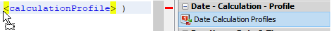
The Date Proflie Chooser will be displayed.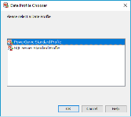
- Select the required calculation profile
- Click OK.
To add a Date Calculation Profile using auto complete
- Click on the point in the script where the <calculation profile> is displayed.
- Press the Ctrl+Space.
A drop down list of the available Date Calculation Profiles will be displayed.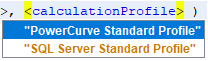
- Select the required calculation profile.
| Auto complete for the Date Calculation Profiles will not work if auto complete is activated outside of the range of the function, or outside of the range of the date <calculationProfile> function parameter. |
- Press Enter.
The function will be added to the script.
The script must be open for editing.
To add a Boolean Expression to a script from the Resources window
- Click on the Expand (+) button to display the contents of Boolean Expression in the Resources window.
- Drag the required Boolean Expression and drop it onto the script at the required position.
The Boolean Expression will be added to the script.
| The following is an example of how this will look in the script editor: |
The script must be open for editing.
To add a Class Set to a script from the Resources window
- Click on the Expand (+) button to display the contents of the Class Set library in the Resources window.
- Logical Data Source Class Set - 1 parameter, (name of the Class Set)
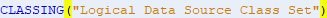
- Logical Data Model Class Set - 2 parameters, (name of the Class Set and instance of the Logical Data Model being used in the Logical Data Source)
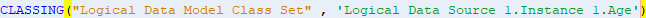
|
There are two types of Class Set, one based on a Logical Data Source the other based on a Logical Data Model. If the Class Set used in the script is undefined, (that is a characteristic has not been selected) it will follow the same behaviour as a Logical Data Source Class Set and only be added with 1 parameter (name of the Class Set). |
To add a Logical Data Source Class Set
- Drag the required Logical Data Source Class Set and drop it onto the script at the required position.
The Class Set that has been created using a Logical Data Source will be added to the script.
| The following is an example of how this will look in the script editor: |
To add a Logical Data Model Class Set
- Drag the required Logical Data Model Class Set and drop it onto the script at the required position.
The studio will open the Select Characteristics dialog and list those Logical Data Sources that use the Logical Data Model characteristic that has been used to create the Logical Data Model Class Set. - Select the instance of the characteristic that is required for the script.
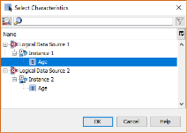
- Click OK.
The Class Set that has been created using a Logical Data Model will be added to the script.
| The following is an example of how this will look in the script editor: |
The script must be open for editing.
To add a Matrix to a script from the Resources window
- Click on the Expand (+) button to display the contents of the Matrix library in the Resources window.
- Logical Data Source Matrix - 1 parameter, (name of the Matrix)
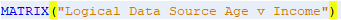
- Logical Data Model Matrix - 3 parameters, (name of the Matrix and the Logical Data Source instance of the Logical Data Model being used for the column and then for the row)
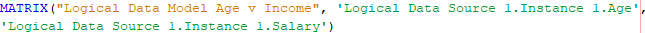
- Mixed Matrix - 2 parameters, (name of the Matrix and the second parameter for whichever axis the Logical Data Model Class Set has been applied)
|
There are three types of Matrix, one based on Logical Data Source Class Sets, one based on a Logical Data Model Class Sets and a mixed type, a Matrix that is based on both a Logical Data Source Class Set and a Logical Data Model Class Set. If the Matrix used in the script does not have two Class Sets defined, or at least one of the selected Class Sets is undefined, (that is a characteristic has not been selected) it will follow the same behaviour as a Logical Data Source Matrix and only be added with 1 parameter (name of the Matrix). |
To add a Logical Data Source Matrix
- Drag the required Logical Data Source Matrix and drop it onto the script at the required position.
The Matrix that has been created using a Logical Data Source will be added to the script.
|
The following is an example of how this will look in the script editor: |
To add a Logical Data Model Matrix
- Drag the required Logical Data Model Matrix and drop it onto the script at the required position.
The studio will open the Select Column Characteristic dialog and list those Logical Data Sources that use the Logical Data Model characteristic that has been used to create the Logical Data Model Matrix.
| The Select Column Characteristic dialog or Select Row Characteristic dialog is the Select Characteristics dialog that has been renamed to help the user select the correct characteristic for the Matrix. |
- Select the instance of the characteristic that is required for the script.
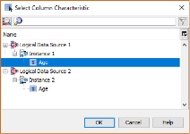
- Click OK.
The studio will open the Select Row Characteristic dialog.
- Select the instance of the characteristic that is required for the row of the matrix and required for the script.
- Click OK.
| If the Matrix contains only one Logical Data Model Class Set, the Select Characteristics dialog will only be displayed once, for either the column or the row depending on which axis the Logical Data Model Class Set has been assigned. |
The Matrix that has been created using Logical Data Model Class Sets will be added to the script.
| The following is an example of how this will look in the script editor: |
To add a mixed Matrix, a Matrix that contains both a Logical Data Source Class Set and a Logical Data Model Class Set
- Drag the required Logical Data Model Matrix and drop it onto the script at the required position.
The studio will open either the Select Column Characteristic dialog or the Select Row Characteristic dialog depending on which axis uses a Logical Data Model Class Set.
| The Select Column Characteristic dialog or the Select Row Characteristic dialog is the Select Characteristics dialog that has been renamed to help the user select the correct characteristic for the Matrix. |
- Select the instance of the characteristic that is required for the script.
- Click OK.
| If the Matrix contains only one Logical Data Model Class Set, the Select Characteristics dialog will only be displayed once, for either the column or the row depending on which axis the Logical Data Model Class Set has been assigned. |
The Matrix that has been created using both Logical Data Model Class Sets and Logical Data Source Class Sets will be added to the script.
| The following is an example of how this will look in the script editor: |
The script must be open for editing.
To add an index table to a script from the Resources window
- Click on the Expand (+) button to display the contents of the Index Table library in the Resources window.
- Logical Data Source Index Table - 1 parameter, (name of the Index Table)
- Logical Data Model Index Table - 3 parameters, (name of the Index Table, the Logical Data Source instance of the Logical Data Model and characteristic being used for the Input column and the Logical Data Source instance of the Logical Data Model that contains the characteristic(s) assigned to the Output column(s))
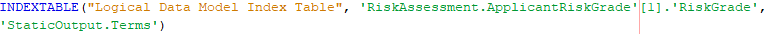
|
There are two types of Index Table, one based on Logical Data Source characteristics the other based on Logical Data Model characteristics. If the Index Table used in the script is undefined, (that is a characteristic has not been selected) it will follow the same behaviour as a Logical Data Source Index Table and only be added with 1 parameter (name of the Index Table). |
To add a Logical Data Source Index Table
- Drag the required Index Table and drop it onto the script at the required position.
The Index Table will be added to the script.
| The following is an example of how this will look in the script editor: |
To add a Logical Data Model Index Table
- Drag the required Logical Data Model Index Table and drop it onto the script at the required position.
The studio will open the Select Input Characteristic dialog and list the Logical Data Model characteristic that are available for selection. - Select the Input column characteristic that is required for the script.
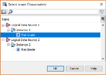
- Click OK.
The studio will open the Select Output Logical Data Model dialog. - Select the Logical Data Model that is required for the script.
- Click OK.
The Index Table that has been created using the Logical Data Models will be added to the script.
| The following is an example of how this will look in the script editor: 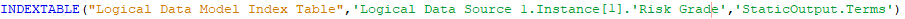 |
A template is a helper for entering a language statement in a script.
The script must be open for editing.
To add a template to a script from the Palette
- Click on the point in the script that you wish to add or insert the template.
- Click on the Expand (+) button in the Palette to expand the Templates.
- Drag the required template and drop it onto the script at the required position.
- Replace the text and the chevrons with appropriate expressions, statements or constants.
The template will be added to the script.
To add a template to a script freehand
- Type the required language statement ensuring that you follow the correct syntax.
There are templates for IF, IF..ELSE, Evaluate, Repeat and While language statements.
Single text items or contiguous strings of text items can be moved within a script using standard keyboard cut and paste facilities.
To move script item(s)
- The script must be open for editing.
- Highlight the required script item or string of items.
- Press Ctrl+X to cut the item(s).
- Click on the point in the script you wish to move to.
- Press Ctrl+V to paste.
The item will be moved.
Single text items or contiguous strings of text items can be deleted in a script using the delete button on the keyboard or the standard keyboard cut facility.
To delete script item(s)
- The script must be open for editing.
- Highlight the required script item or string of items.
- Press Delete on the keyboard, or press Ctrl+X.
The item or string of items will be deleted.
Click on the Compile Script  button to check the script.
button to check the script.
A script must be saved before it can be used.
To save a script
- To save any changes without exiting the editor click on the save icon.
- Click on the
 icon on the editor tab to close the script editor. If you have not saved already, you will be asked to save any changes made:
icon on the editor tab to close the script editor. If you have not saved already, you will be asked to save any changes made: - Click to save with errors.
- Click to discard any changes made.

{kind=link}
{kind=link}
{kind=link}
{kind=link}
{kind=link}
{kind=link}
{kind=link}
{kind=link}
{kind=link}
{kind=link}
{kind=link}
{kind=link}
{kind=link}
{kind=link}
{kind=link}
{kind=link}
{kind=link}
{kind=link}
{kind=link}
{kind=link}
{kind=link}
{kind=link}
{kind=link}
{kind=link}
{kind=link}
{kind=link}
{kind=link}
{kind=link}
The script editor will close, saving the script.
The Derived Data Script can now be used within other components.
Once the user has successfully compiled a Derived Data Script, the user will be able to test it using the Batch or Interactive Tester.
The user can test a Derived Data Script either by manually typing in data referenced in the Derived Data Script or by performing a test against a known data source.
To perform an interactive test
To test a Derived Data Script manually by entering data into the relevant fields for the input characteristics, use the Interactive Tester.
To perform a batch test
To test a Derived Data Script using data from a .csv file, from the Explorer window, right click on the component and select New Test Project to use the Batch Tester.